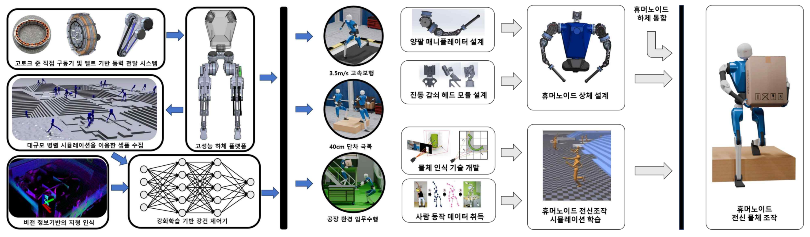
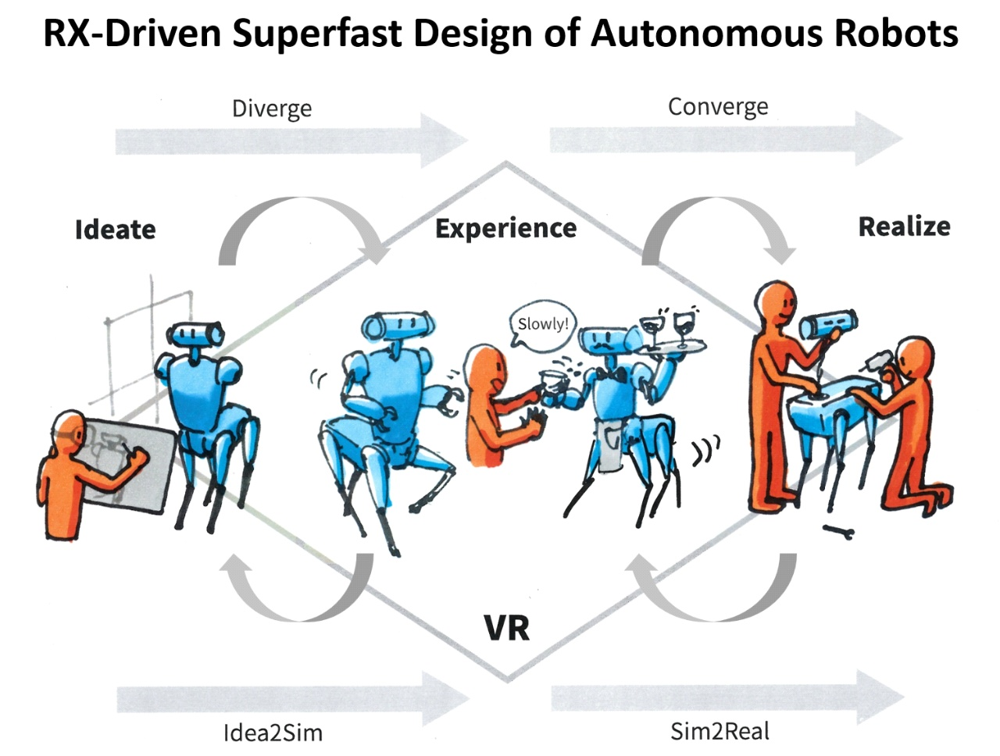
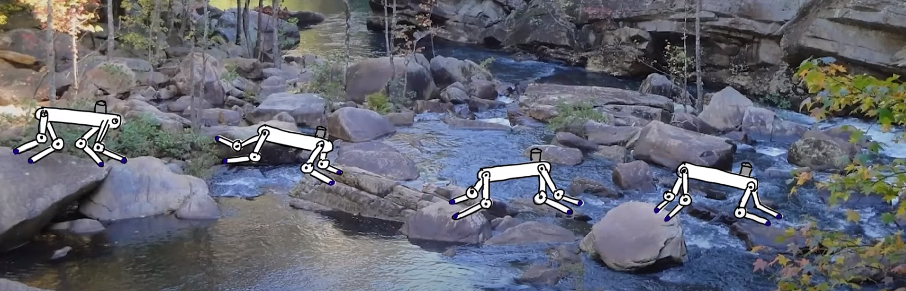
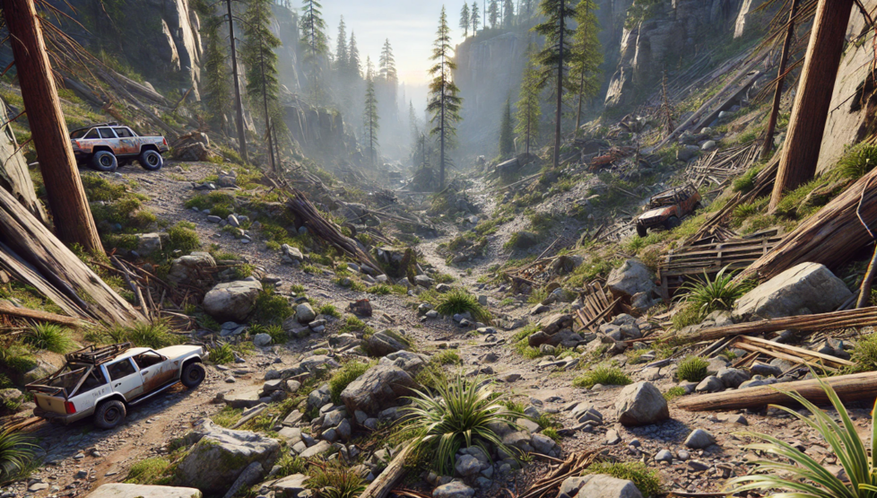
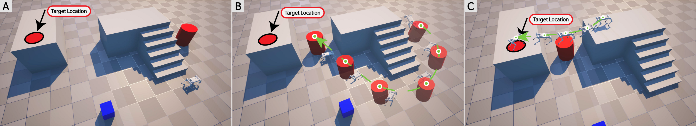

Projects
This page ourlines our lab’s work around the world, organized according to important ongoing projects.
Robust Humanoid Robots
{kind=link}
We are collaborating with KAIST’s URL/DRCD/CLVR, MIT’s Biomemetic Robotics Lab, and Rainbow Robotics to develop a humanoid robot with agile movement, obstacle avoidance, and autonomous dual-arm manipulation.
Our work on robust humanoid robots is funded by Republic Korea’s Ministry of Trade, Industry and Energy (MOTIE)
Revolutionizing Autonomous Design
{kind=link}
This project aims to revolutionize the development process of autonomous agents by actively utilizing advanced VR (Virtual Reality) and AI (Artificial Intelligence) technologies. The goal is to create an integrated system that enables the super-fast design of various forms, structures, movements, and interactions of autonomous agents that satisfy diverse situations, users, and functions. This system will allow users to realistically simulate, experience, and evaluate these designs in VR, and subsequently prototype them in hardware.
Our work on Autonomous Design is funded by DRB
Quadrupedal Locomotion
{kind=link}
Our work for quadrupedal locomotion for stepping stones is funded by Samsung Research Funding & Incubation Center of Samsung Electronics
Language Driven Environment Design
{kind=link}
Our work for use of large language model for robotics environment design and planning is sponsored by NAVER Cloud
High-Speed Vision Autonomy
{kind=link}
We advance autonomous systems by developing a High-speed Vision Module and Gaze Planner for rapid visual processing, enhancing navigation through Multi-Sensor Fusion, and enabling high-speed locomotion on collapsible terrain.
Our work on vision autonomy is funded by Singapore’s DSO National Laboratories.
Whole Body Manipulation
{kind=link}
Our work for reactive trajectory planning and environment manipulation in unstructured situation is funded by the National Research Foundation of Korea (NRF).